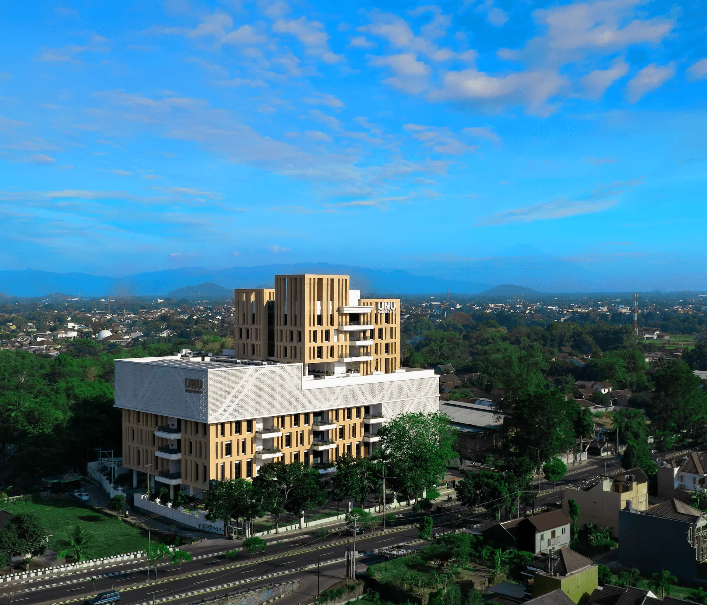

Profil Program Studi Informatika UNU Jogja
Program Studi Informatika Universitas Nahdlatul Ulama Yogyakarta (UNU Jogja) hadir sebagai pusat keunggulan akademik yang secara progresif dirancang untuk menjawab tantangan era transformasi digital global. Dengan kurikulum yang adaptif dan visioner, kami tidak hanya membekali mahasiswa dengan keahlian teknis mutakhir seperti Kecerdasan Buatan (AI), Data Science, dan Cyber Security tetapi juga mengintegrasikannya dengan semangat inovasi serta nilai-nilai etika luhur. Kami berkomitmen mencetak generasi technopreneur dan profesional IT masa depan yang mampu menciptakan solusi teknologi berdampak luas, relevan dengan kebutuhan industri mutakhir, serta siap memimpin perubahan di tengah dinamika zaman yang terus berevolusi.

Tentang
Keunggulan
sistem pembelajaran yang adaptif, fokus pada teknologi masa depan (seperti AI atau Big Data), dan metode belajar berbasis proyek nyata (project-based learning).
Fasilitas
ekosistem belajar yang mendukung, seperti laboratorium komputer berspesifikasi tinggi, akses jurnal global, serta ruang kolaborasi yang nyaman untuk berdiskusi.
Kerja sama
Kami menjalin sinergi yang kuat dengan berbagai perusahaan teknologi lokal, instansi pemerintah, dan komunitas global untuk membuka peluang magang, riset bersama, serta penyaluran kerja yang luas bagi mahasiswa.